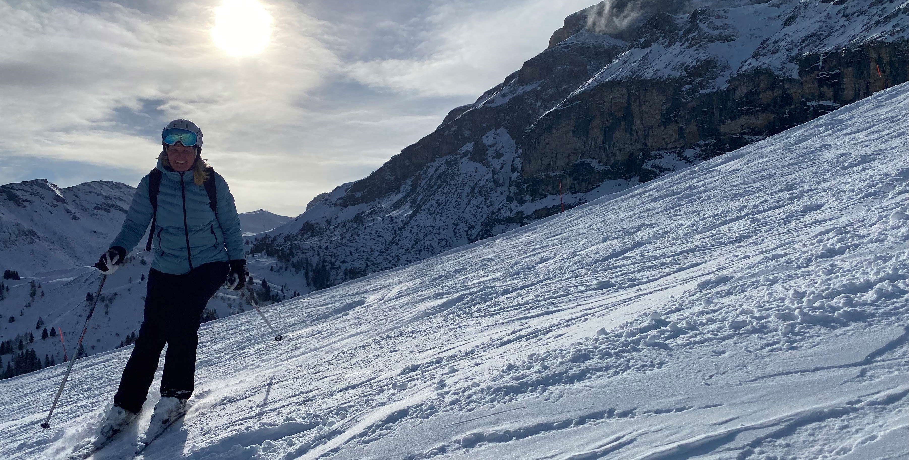

<!DOCTYPE html>
<html lang="en">
<head>
    <meta charset="UTF-8">
    <meta http-equiv="X-UA-Compatible" content="IE=edge">
    <meta name="viewport" content="width=device-width, initial-scale=1.0">
    <title>Skidsystemet</title>
    <link rel="stylesheet" href="css/style.css">
    <style>
        @import url('https://fonts.googleapis.com/css2?family=Open+Sans&display=swap');
        </style>
          <style>
            @import url('https://fonts.googleapis.com/css2?family=Roboto+Slab:wght@500&display=swap');
            </style>
</head>
<body>
  
</html>
<html>
  <body>
    <header class="header">
        <nav class="navbar">
            <a href="index.html" class="nav-logo"> 
                
            </a>
            <ul class="nav-menu">
                <li class="nav-item">
                    <a href="index.html" class="nav-link">Hem</a>
                </li>
                <li class="nav-item">
                    <a href="skidsystemet.html" class="nav-link">Skidsystemet</a>
                </li>
                <li class="nav-item">
                    <a href="matonoje.html" class="nav-link">Mat och Nöje</a>
                </li>
                <li class="nav-item">
                    <a href="hotelet.html" class="nav-link">Hotelet</a>
                </li>
            </ul>
            <div class="hamburger">
                <span class="bar"></span>
                <span class="bar"></span>
                <span class="bar"></span>
            </div>
        </nav>
</header>

<script src="js/script.js"></script>
<main>
  
</main>  

<h1 class="h1stor">
    Skidsystemet
</h1>
<p>
    Skidsystemet i Canazie till hör dolmitisuperski. 
    Det är ett av de största skidsystemen i europa, fördelanra med detta skidsystem dock
    är att man åker runt ett bergsysstem som heter selmamasivet, det gör att man kan lätt 
    upptäcka nya åk varje dag. Alltså varje dag hittade vi nya backar och vi kanse han åka 
    en 50% av alla backar på en vecka, vilket gör att det är en stor kontrast till sälen, 
    eftrsom där åker man mer upp och ner. 
</p>

<h2>
    Mer info
</h2>
<p>
    Det finns hela 122 svarat pister, 727 röda och 366 blåa! 
    Det gör att det är nästan omöjlit att hinna åka alla pister på sin vistelse
    i Canazie. Den högsta åkhöjden är 2520m över havet. Vilket gör att det exemplvis 
    finns en pist som heter lalogia, som är hela en mil lång!
</p>
<div id="collageskiddiv">
    <section id="collageskid">
        <article id="ski1">
            
        </article>
        
        <article id="ski2">
             
        </article>
        <article id="ski3">
             
        </article>
    </section>

</div>

</body>
</html>